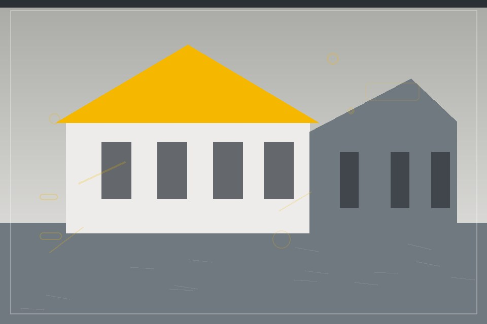

RESIDENTIAL
Residential builds
Spaces designed around the daily life that happens inside them.
Residential · Commercial · Renovation
A hands-on building team for considered spaces, clear communication, and dependable project delivery.
Clear plans. Careful work. Solid handover.

Brickline Builders · Sample workWhat we do
RESIDENTIAL
Spaces designed around the daily life that happens inside them.
COMMERCIAL
Practical environments shaped for teams, customers, and daily operations.
RENOVATION
Careful updates that respect what works and improve what does not.
Selected projects
RESIDENTIAL
A bright family home organized around a quiet shared courtyard.
COMMERCIAL
A flexible work setting with simple circulation and durable finishes.
RENOVATION
An older property refreshed with practical, low-fuss updates.
Our process
We learn about the space, your needs, and the limits of the project.
We make the proposed work, timing, and budget easy to review.
We keep progress visible and raise questions early.
We walk through the finished work and document the handover.
Safety comes first
Sample safety practices include site orientation, clean work areas, appropriate protective equipment, and regular hazard checks. This section is illustrative and does not describe a certified program.
Kind words
“The work plan was easy to understand and the team kept the project moving.”
“We appreciated the updates and the care taken around our daily operations.”
“The crew was organized, respectful, and clear about the next steps.”
Planning a project?